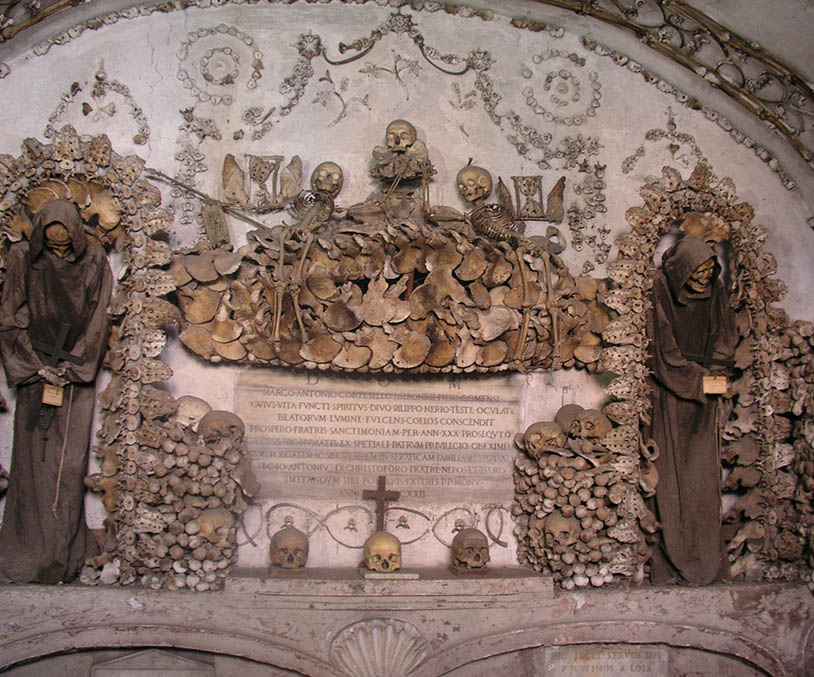

The Catacombs of Paris and the Capuchin Crypt in Rome, Italy are two large burial places. These locations provide a creepy reminder of the inevitable: death. While these places were used to celebrate death and provide final resting places for thousands, it is undeniable to the onlooker that these places are outright creepy.
Capuchin Crypt
The Capuchin Crypt is a small space comprising several tiny chapels located beneath the church of Santa Maria della Concezione dei Cappuccini on the Via Veneto near Piazza Barberini in Rome, Italy. It contains the skeletal remains of 3,700 bodies believed to be Capuchin friars buried by their order. The Catholic order insists that the display is not meant to be macabre, but a silent reminder of the swift passage of life on Earth and our own mortality.
The bones were arranged along the walls, and the friars began to bury their own dead there, as well as the bodies of poor Romans, whose tomb was under the floor of the present Mass chapel. Here the Capuchins would come to pray and reflect each evening before retiring for the night. The crypt, or ossuary, now contains the remains of 4,000 friars buried between 1500 and 1870, during which time the Roman Catholic Church permitted burial in and under churches.
As of 1851, the crypt was only opened to the public, in exchange for an admittance fee, for the week following All Souls Day. It is currently (2022) open to the public daily except for certain holidays. There are six total rooms in the crypt, five featuring a unique display of human bones believed to have been taken from the bodies of friars who had died between 1528 and 1870.
Six Rooms:
Catacombs of Paris
The Catacombs of Paris are underground ossuaries in Paris, France, which hold the remains of more than six million people in a small part of a tunnel network built to consolidate Paris's ancient stone quarries. Extending south from the Barrière d'Enfer ("Gate of Hell") former city gate, this ossuary was created as part of the effort to eliminate the city's overflowing cemeteries. Preparation work began shortly after a 1774 series of basement wall collapses around the Holy Innocents' Cemetery added a sense of urgency to the cemetery-eliminating measure, and from 1786, nightly processions of covered wagons transferred remains from most of Paris's cemeteries to a mine shaft opened near the Rue de la Tombe-Issoire.
The ossuary remained largely forgotten until it became a novelty-place for concerts and other private events in the early 19th century; after further renovations and the construction of accesses around Place Denfert-Rochereau, it was opened to public visitation from 1874. Since 2013, the Catacombs have numbered among the fourteen City of Paris Museums managed by Paris Musées. Although the ossuary comprises only a small section of the underground mines of Paris, Parisians currently often refer to the entire tunnel network as the catacombs. (source)